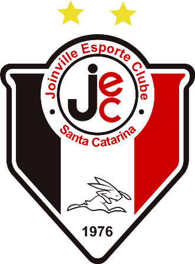
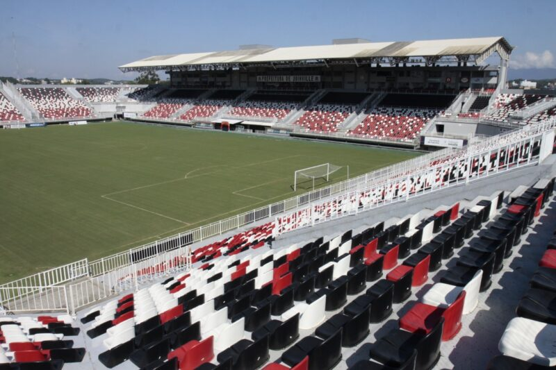

Bem-vindo ao Portal do JEC
O Joinville Esporte Clube é uma das mais importantes agremiações futebolísticas de Santa Catarina. Fundado em 1976, o clube acumula uma história repleta de conquistas marcadas pela raça e devoção da torcida tricolor.

Identidade Tricolor
As cores oficiais do clube representam a união das tradições esportivas da cidade de Joinville.
Elementos Marcantes
- Cores do clube:
- Vermelho
- Preto
- Branco
- Mascote Oficial: Coelho
- Estádio Oficial: Arena Joinville
- Alcunha: Tricolor de Aço
Principais Momentos da História
- 1976 - Fundação oficial do Joinville Esporte Clube
- 1978 - Início da lendária sequência de títulos estaduais
- 2011 - Conquista do Campeonato Brasileiro Série C
- 2014 - Conquista do Campeonato Brasileiro Série B

Quer fazer parte da torcida e obter vantagens exclusivas? Acesse a página para realizar sua Inscrição na Escolinha e Sócio do JEC.